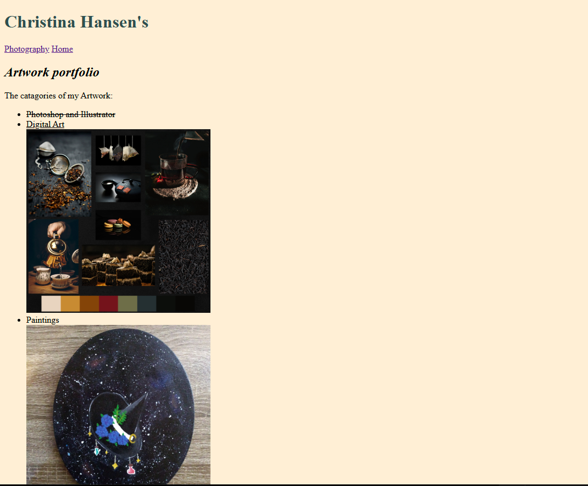

Learning from my peerviews perspective on my own webpages and applying their feedback to my assignments. Also, giving my feedback on their own assignments and trying to be clear with my words for them to understand. The communication I learned to apply to my website as well since it needed to communicate to the viewer what the website is about.
Each time I came across a coding I was not figuring out I went back to the course website. I usually could fix it on my own, but if I couldn't figure it out I would leave a comment stating what I could not figure out. I took each advise from my previous assignments and applied them to my webpages when applicable. Learning from my mistakes to improve on the assignments.
I made sure to give myself pleanty of time to work on my assignments. Ensuring that they were turned in time as well. It is important to stay on track and get things in on time to make sure that I did not fall behind and overwhelm myself.
I kept trying new techniques and feeedback to my webpage, to help shopw my creativity. I explored different fonts and color styles for my assignments to see what it would look like and then would choose the best option. Applying the new skills but also keeping to my own style, to show how creative I can be. My assignments are my proof of my creative side.
Seeing what my classmates created and hearing from them on feedback for my assigments helped me understand more where to go with each assignment. It helped to have others point of view on what I was creating and make sure my webpages were well designed, each feedback I got from my classmates ment a lot to me to help improve my skills.
I learned a lot from this course how to keep my coding clean and organized and make sure it is easy to navigate for me but others as well. I felt that each assignment I got better at writing the code and keeping it clean, which made me more confident in my improvement. I made sure my files were also organized and responded on the webpages correctly. Making sure that my coding and files were easy to navigate was really helpful to move my previous work into the next assignment and made my work more efficient as well. This allowed for me to further my skills and improve my webpages for my assignments efficiently.
I never used the VS Code and when I started the course I made sure to read everything and take notes. Through my education I have learned new platforms/programs each semester, I feel that I can learn and adapt to new things pretty quickly. With VS Code and the course work I was able to learn and become comfortable with it to be able to navigate and use it efficiently. Bootstrap on the other hand was a challenge since I only had a week to figure it out. Some things worked but the ones I wanted to use did not. Though with this If given more time I would be able to figure out Bootstrap I am confident I can understand the coding.
Throughout this entire semester I have been working on a website that was a Portfolio of my past work I have created for previous courses at the University of Montana, Helena College and some from my own personal artwork.
Below is the links to each 5 websites of the progress my websaite went through to get to the Final Version.